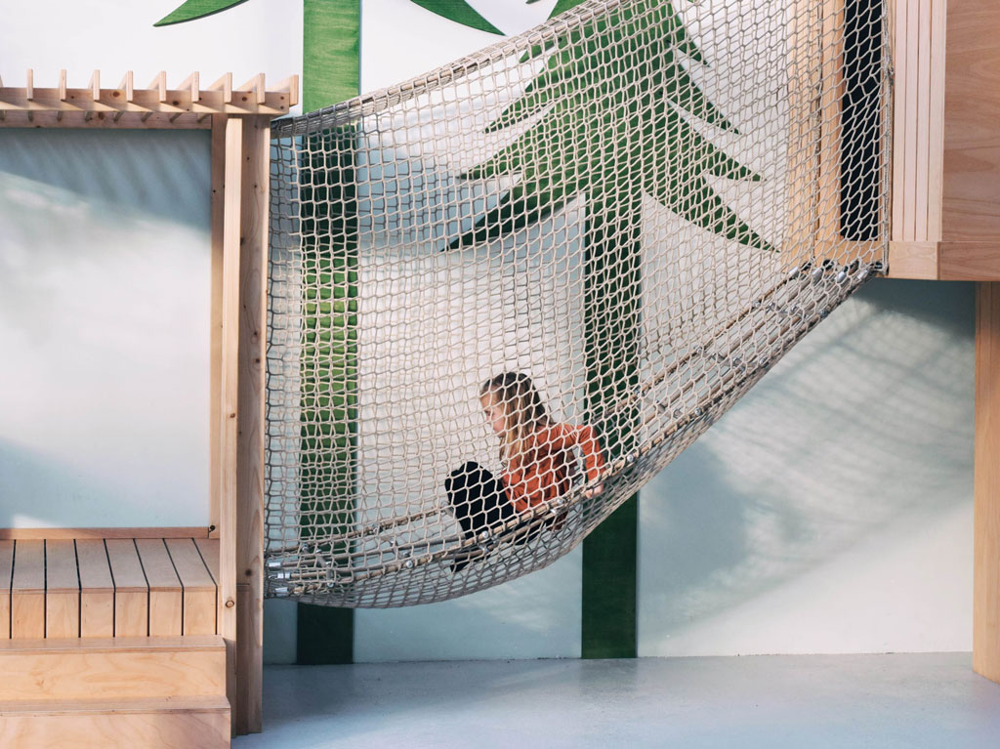

Buiten ontbijten met de kleine? Hier kan het!

Met de kids ontbijten in Den Haag? Of gewoon even koffie drinken? Check hier onze tips voor kinderrestaurants, lunchplek, borreladresjes en kindvriendelijke restaurants met kindermenu, speeltuin, kinderhoek, speelhoek, kindervermaak of een fijn terras in en om Den Haag!
Check hieronder 10 x leuke kindvriendelijke plekken in Den Haag
KOFFIE EN KIND
Koffie en Kind is een ontmoetingsplek waar ouders en kinderen van 0 tot 4 jaar samenkomen om heerlijk een bakje koffie te drinken en om samen te kunnen spelen en leren. Deze unieke spot met leuke speelhoeken, een natuurtuin en dagelijkse activiteiten maakt het een plek waar kinderen zich uren kunnen vermaken! Ze zijn tot november 2020 dicht i.v.m. Corona. Normaal kan je er elke doordeweekse dag terecht van 9:00 tot 11:30. Adres: Laan van Poot 38, Den Haag
RESTAURANT PEX
Naast de bosjes van Pex heeft Restaurant PEX een gezellige, ongedwongen familie- en vriendensfeer samen met het bos. Of je nu een wandeling met de kids maakt door het bos, een wedstrijd hebt gespeeld op een van de omliggende sportvelden of gewoon even wil genieten met je vrienden en familie. Iedereen kan zijn hart ophalen bij restaurant PEX. Vanaf 9:00 's ochtends ben je elke dag welkom Bij Restaurant PEX. Adres: Evert Wijtemaweg 5, Den Haag
DE BOOMHUTTENCLUB
De Boomhuttenclub bevindt zich in de boekhorststraat net buiten het Haagse centrum. Kinderen vinden dit een speelparadijs doordat er een speeltuin aanwezig is in het pand. Je kunt er terecht voor ontbijt en lunch. Elke dag van de week zijn zij open, behalve op dinsdagen. Vanaf 9:00 ben je welkom! Adres: Boekhorststraat 47, Den Haag
Bron: HPS
ANNE&MAX
Niet één, twéé maar drie vestigingen van Anne&Max zijn er in Den Haag te vinden. In de Fahrenheitstraat, De Frederik Hendriklaan en in het centrum tegenover de grote kerk. Anne&Max voelt als een huiskamer waar gasten zich op elk moment van de dag thuis voelen. In de loungestoelen verdwijn je met een goed boek of de krant van die dag. Aan de leestafel is ruimte om een spelletje te spelen. De tuinkamer is een oase van rust. Bij de tafels aan het raam kun je heerlijk mensen kijken en op de banken klets je bij onder het genot van een kop koffie. Vanaf 8:00 's ochtends ben je welkom Bij Anne&Max. Adres: Fahrenheitstraat 472, Den Haag Adres: Frederik Hendriklaan 166, Den Haag Adres: Kerkplein 45, Den Haag
BAGELS & BEANS
In deze vestiging van Bagel & Beans kan je een mooie speelhoek vinden achterin de zaak. Je kan je peuter makkelijk in de gaten houden doordat er zitplaatsen zijn die naast de speelhoek zijn. Vanaf 8 uur gaat deze vestiging open. Behalve op zondag, dan zijn zij vanaf 10 uur 's ochtends open. Adres: Aert van der Goesstraat 2, Den Haag
YOGHURT BARN DEN HAAG
In het mooie centrum van Den Haag bevindt zich de Yoghurt Barn. Er is een speciale kinderhoek waar je fijn kan zitten. Hier kan je van yoghurt genieten die een chef voor je maakt, of je kan los gaan door je eigen toppings te kiezen. Naast yoghurt is er ook koffie, thee en gebak. Vanaf 9 uur 's ochtends kan je hier zitten. Adres: Plaats 25, Den Haag
HARTBEACH SURFRESTAURANT
Hier kan je lekker ontbijten, lunchen en dineren. Er is plek op een zonnig terras aan Scheveningen. In de keuken staat "The surfing Chef" die soms nog net niet in zijn wetsuit in de keuken staat. In dit idyllische surfrestaurant kan je het gehele jaar door terecht. Vanaf 9 uur opent het surfrestaurant. Adres: Strandweg 3, Den Haag

Bron: Hartbeach.nl
STRANDPAVILJOEN ZUID
Met speelgoed en trampolines aanwezig is dit een heus paradijs voor beide ouders al kinderen op het mooie Zuiderstrand. Strandpaviljoen Zuid is een relaxte plek in Den Haag. Op drukke dagen is het hier vaak rustiger dan in Scheveningen. Zoek je een fijne plek waar je kind vrij kan spelen, kom dan zeker naar strandpaviljoen Zuid. Vanaf 9 uur opent het paviljoen. Adres: Zuiderstrand 3, Strandslag 11, Den Haag
STRANDCLUB WIJ
Op het strand van Scheveningen kun je strandclub 'Wij' vinden voor een uitgebreid ontbijtbuffet. Deze is er welke zondagochtend. Daarnaast is er ook een speeltuin aanwezig. Elke ochtend vanaf 9 uur kun je hier ontbijten. Adres: Strandweg 1, Scheveningen

Bron: strandclubwij.nl